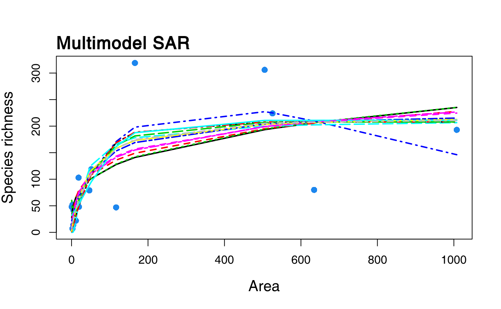
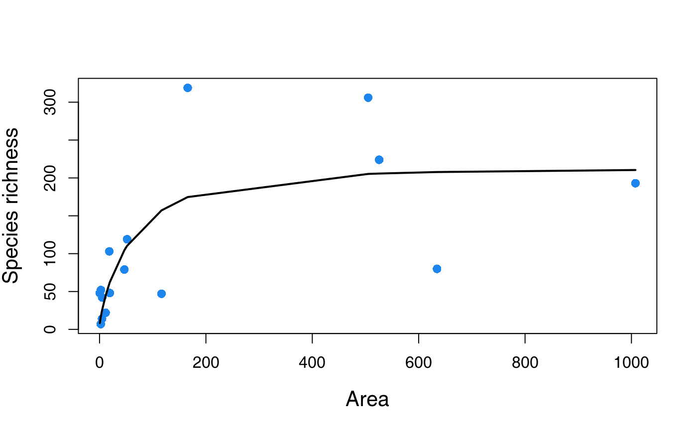
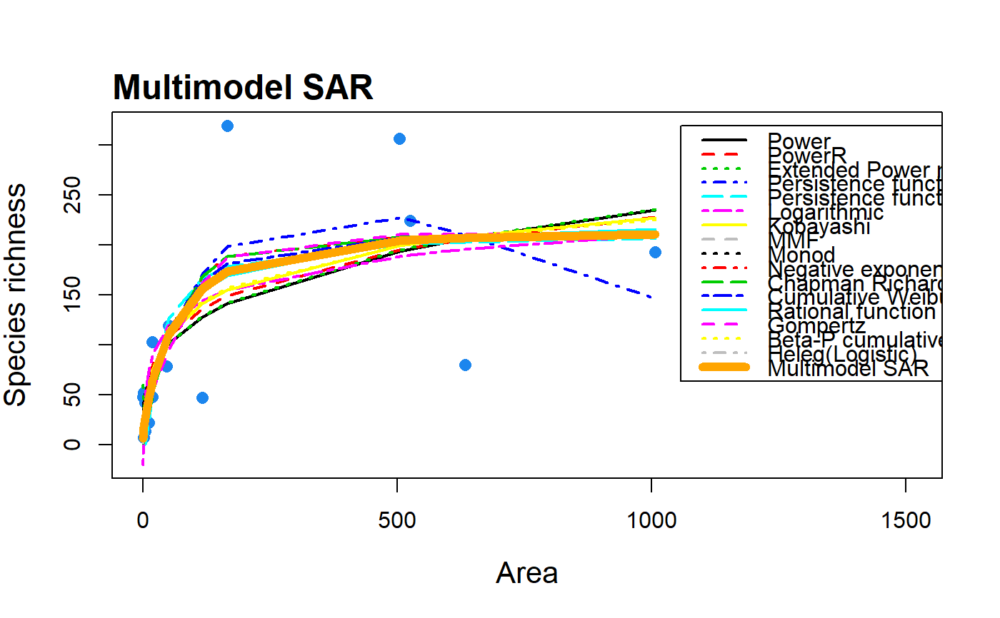
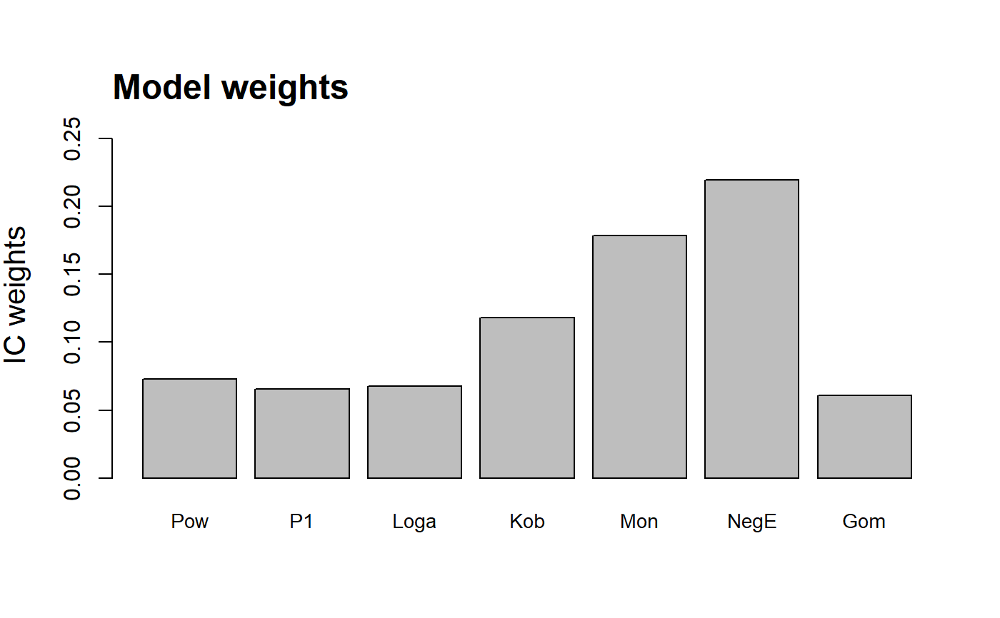

S3 method for class 'multi'. plot.multi creates plots
for objects of class multi, using the R base plotting framework. Plots
of all model fits, the multimodel SAR curve (with confidence intervals)
and a barplot of the information criterion weights of the different
models can be constructed.
# S3 method for multi plot(x, type = "multi", allCurves = TRUE, xlab = NULL, ylab = NULL, pch = 16, cex = 1.2, pcol = "dodgerblue2", ModTitle = NULL, TiAdj = 0, TiLine = 0.5, cex.main = 1.5, cex.lab = 1.3, cex.axis = 1, yRange = NULL, lwd = 2, lcol = "dodgerblue2", pLeg = TRUE, modNames = NULL, cex.names = 0.88, subset_weights = NULL, confInt = FALSE, ...)
Arguments
| x | An object of class 'multi'. |
|---|---|
| type | The type of plot to be constructed: either |
| allCurves | A logical argument for use with |
| xlab | Title for the x-axis. Only for use with |
| ylab | Title for the y-axis. |
| pch | Plotting character (for points). Only for use with |
| cex | A numerical vector giving the amount by which plotting symbols (points) should be scaled relative to the default. |
| pcol | Colour of the points. Only for use with |
| ModTitle | Plot title (default is |
| TiAdj | Which way the plot title is justified. |
| TiLine | Places the plot title this many lines outwards from the plot edge. |
| cex.main | The amount by which the plot title should be scaled relative to the default. |
| cex.lab | The amount by which the axis titles should be scaled relative to the default. |
| cex.axis | The amount by which the axis labels should be scaled relative to the default. |
| yRange | The range of the y-axis. Only for use with |
| lwd | Line width. Only for use with |
| lcol | Line colour. Only for use with |
| pLeg | Logical argument specifying whether or not the legend should
be plotted (when |
| modNames | A vector of model names for the barplot of weights (when
|
| cex.names | The amount by which the axis labels (model names) should
be scaled relative to the default. Only for use with |
| subset_weights | Only create a barplot of the model weights for
models with a weight value above a given threshold
( |
| confInt | A logical argument specifying whether confidence intervals
should be plotted around the multimodel curve. Can only be used if
confidence intervals have been generated in the |
| … | Further graphical parameters (see
|
Note
When plotting all model fits on the same plot with a legend it is necessary to manually extend your plotting window (height and width; e.g. the 'Plots' window of R studio) before plotting to ensure the legend fits in the plot. Extending the plotting window after plotting simply stretches the legend.
Occasionally a model fit will converge and pass the model fitting checks
(e.g. residual normality) but the resulting fit is nonsensical (e.g. a
horizontal line with intercept at zero). Thus, it can be useful to plot
the resultant 'multi' object to check the individual model fits. To
re-run the sar_average function without a particular model, simply
remove it from the obj argument.
For visual interpretation of the model weights barplot it is necessary
to abbreviate the model names when plotting the weights of several
models. To plot fewer bars, use the subset_weights argument to
filter out models with lower weights than a threshold value. To provide
a different set of names use the modNames argument. The model
abbreviations used as the default are:
Pow = Power
PowR = PowerR
E1 = Extended_Power_model_1
E2 = Extended_Power_model_2
P1 = Persistence_function_1
P2 = Persistence_function_2
Loga = Logarithmic
Kob = Kobayashi
MMF = MMF
Mon = Monod
NegE = Negative_exponential
CR = Chapman_Richards
CW3 = Cumulative_Weibull_3_par.
AR = Asymptotic_regression
RF = Rational_function
Gom = Gompertz
CW4 = Cumulative_Weibull_4_par.
BP = Beta-P_cumulative
Hel = Heleg(Logistic)
Lin = Linear_model
Examples
data(galap) #plot a multimodel SAR curve with all model fits included fit <- sar_average(data = galap)#> #> Now attempting to fit the 20 SAR models: #> #> ── multi_sars ───────────────────────────────────────────────────────────────────────────── multi-model SAR ── #> → power : ✔ #> → powerR : ✔ #> → epm1 : ✔ #> → epm2 : ✔ #> → p1 : ✔ #> → p2 : ✔ #> → loga : ✔ #> → koba : ✔ #> → mmf : ✔ #> → monod : ✔ #> → negexpo : ✔ #> → chapman : Warning: could not compute parameters statistics #> → weibull3 : ✔ #> → asymp : ✔ #> → ratio : ✔ #> → gompertz : ✔ #> → weibull4 : ✔ #> → betap : ✔ #> → heleg : ✔ #> → linear : ✔ #> #> Model fitting completed - all models succesfully fitted. Now undertaking model validation checks. #> Additional models will be excluded if necessary:#> #> #>#> 16 remaining models used to construct the multi SAR: #> Power, PowerR, Extended Power model 2, Persistence function 1, Persistence function 2, Logarithmic, Kobayashi, MMF, Monod, Negative exponential, Chapman Richards, Cumulative Weibull 3 par., Rational function, Gompertz, Beta-P cumulative, Heleg(Logistic) #> ───────────────────────────────────────────────────────────────────────────────────────────────────────────────plot(fit)